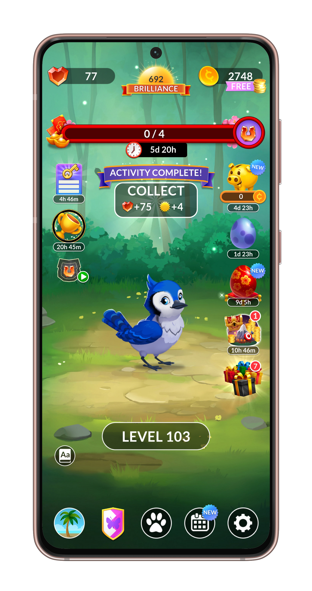

Background

Wordscapes is a casual mobile word puzzle game developed by PeopleFun. Players connect letters to form words and complete crossword-style puzzles set against scenic landscape backgrounds. With more than 10 million players and a 22% share of the global word games market, it is one of the most widely played games in its category. As of 2026, the game averages approximately 2 million daily active players.
Since launching in 2017, Wordscapes has introduced new features and entry points on the Home Screen. Over time, these additions increased the number of visible icons and UI elements players encounter when starting a session.
Challenge
The Game Team wanted to reorganize and simplify the Home Screen to reduce perceived visual clutter and create space for new features and meta systems. However, the team had limited insight into how players actually used the screen. Before making structural changes, we needed to understand how players navigate and prioritize features in order to reduce the risk of disrupting established player behaviors and habits.
Problem
The team lacked visibility into how players navigate the Home Screen, which features anchor their daily routines, and how players mentally organize the different elements on the screen. Without this understanding, it was difficult to determine which areas of the interface could be safely reorganized without negatively affecting player engagement and retention.
My Role
I collaborated with UX and Design to identify the core research questions and design a Home Screen customization exercise. I wrote the moderator guide, recruited participants, and conducted remote moderated interviews with highly engaged and tenured Wordscapes players.
Process
I conducted 60-minute remote moderated interviews with eight highly engaged Wordscapes players recruited through an in-game recruitment survey. Sessions began with a discussion of players' daily routines and how they currently navigate the Home Screen. Participants then completed a customization exercise in which they arranged feature icons on a blank Home Screen, revealing how they mentally organize the interface.

What We Learned
Players mentally organize the Home Screen into spatial zones and rely on a small set of routine features such as Daily Puzzle and Daily Goals to anchor their sessions. The research also showed that feature placement alone does not drive engagement, as some elements were seen as appropriately placed but were rarely actively checked.

Impact
The research clarified which areas of the Home Screen anchor player routines and which areas function as secondary spaces. These insights helped the team identify where new features could be introduced without disrupting established player habits. The findings informed follow-up product experiments, including an A/B test of the Daily Puzzle location, the removal of the Dictionary feature, and testing future placements for tournaments and daily features.